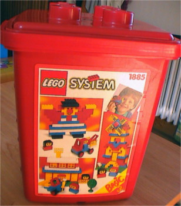
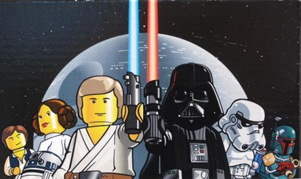
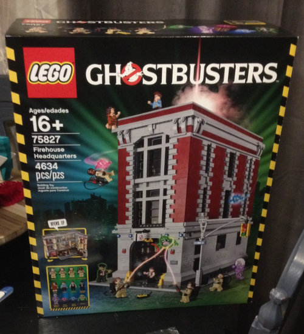
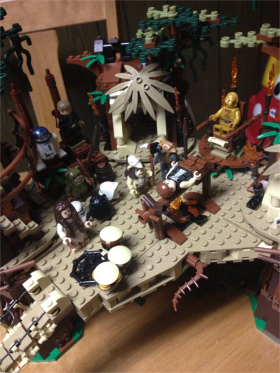
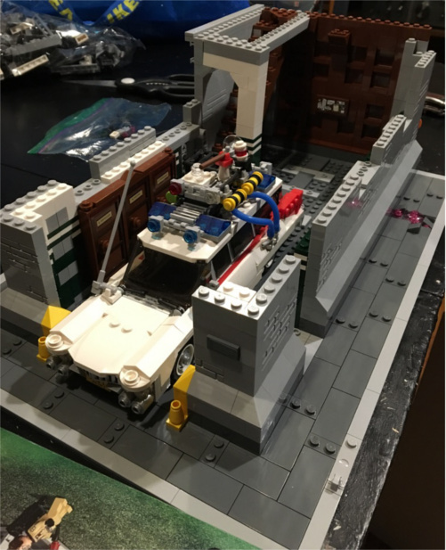

I've been building Legos for many years. In fact, I don't think I've ever stopped.
I can distinctly remember a large, red tub, filled to the brim, with generic Lego building toys when I was small.
This will likely show off my age, since, to me, licenced Lego sets are a relatively new thing. My brother and I
used to build our own versions of spaceships, race cars and airplanes. As we got older, we went
more by the manuals and less off imagination. We got older, but the Legos were always there.
we never quite grew out of toys, truthfully.

A big box of Legos, similar to my own growing up
A long time ago, in a Target Aisle far, far away...
It wasn't until the late 1990s that the marriage of my geek passions finally came to fruition:
Official Star Wars Legos. Mind you, this was back when Legos were still yellow. How awesome
was this! My brother and I bought as many sets as we could. I always opted for the smaller,
more economic sets. More variety that way, I figured. My first Star Wars Lego set was the Landspeeder.
It was all of $10 and came with 4 mini-figs. By the way, my brother and I were in our teens at this point.

EVERYTHING IS AWESOME!
Star Wars still dominates my Lego collection, though it has branched out considerably.
I have Batman, Marvel, the Lego Movie, and Ghostbusters Legos. So pumped about the
Ghostbusters Legos! My current project is the Ghostbusters' Firehouse. It is the single largest
and most expensive set I have purchased to date. It has over 4600 pieces, three levels inside, a working
fire pole AND the Ecto-1(sold separately) fits inside!

Always Under Construction
My brother and I have, technically, grown-up. We are both married. He has one kid and another
on the way. We don't live together or share a room like we did growing up, but we are still close.
Usually, we try to get together once a month to work on Lego projects. We make it work, when we
can. It took us a long time to finish his Ewok Village, and it will likely take even
longer to work on the Firehouse. But that's just fine with me...

The Lego Force Awakens!
My wife, Beth, wasn't big on Legos when she was growing up. They were always around, undoubtably
being stepped on, because older her brother, Joe, has always loved them. It wasn't really until
the new Star Wars film, The Force Awakens, came out in theatres and the merchandise hit the shelves.
We both LOVE the movie. It reminds you of everything you love about Star Wars and why
it was a big deal for so many of us in our youth and beyond. Naturally, I started buying the
Lego sets after seeing the movie. Beth has always liked the mini-fig representations of
characters, and slowly I could see her interest growing in the building part of the toy. She also
loves the character of Rey, so I bought her the Rey's Speeder toy. She has been more and more
addicted ever since. We just completed the Encounter on Jakku set, with our sights on
Millenium Falcon being next.